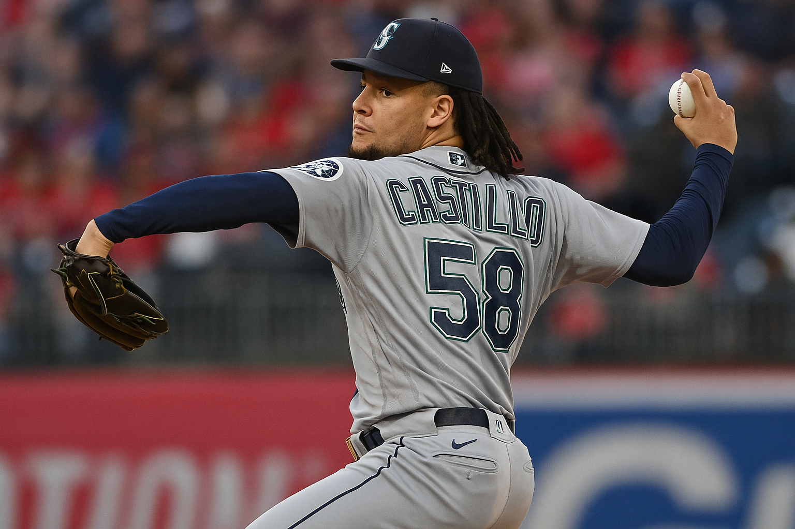
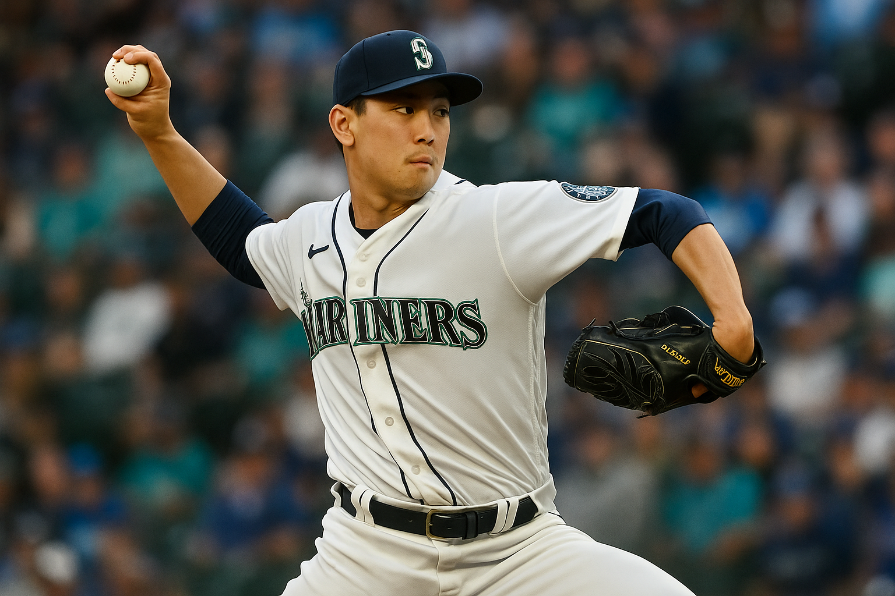
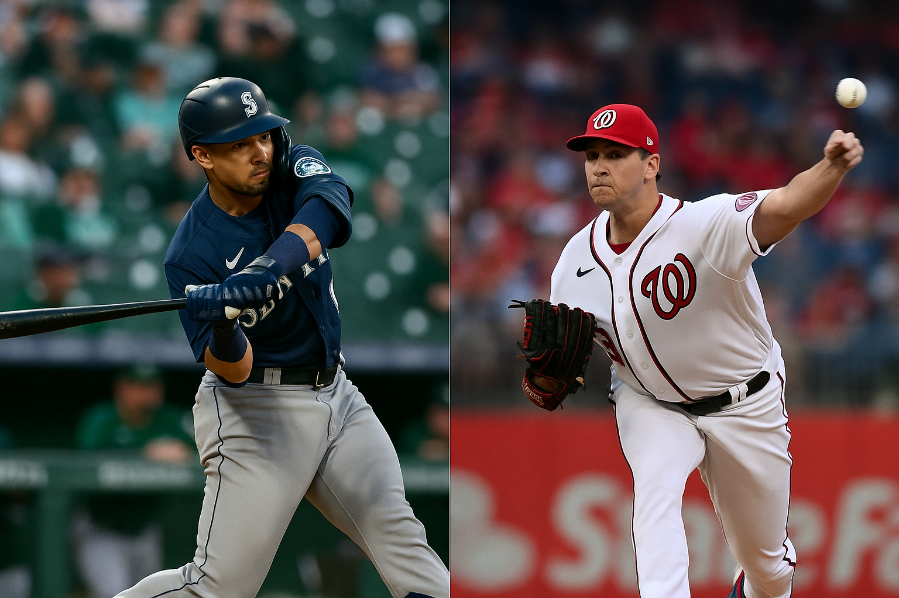
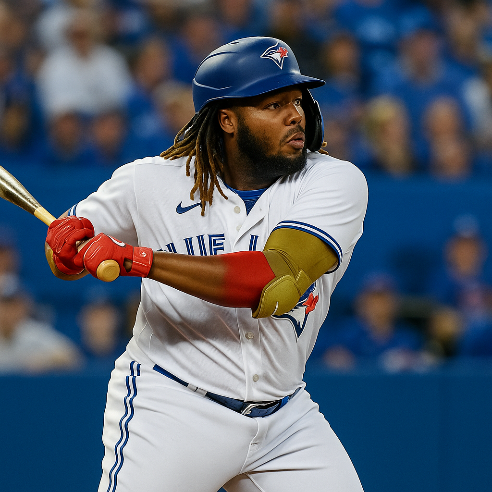

Daily Picks and Analysis
This one has the feel of a classic under. Two red hot starters take the mound . Hunter Brown has been lights out for Houston, with a 1.83 ERA and a fastball that’s generating serious whiffs. Over his last four outings, he’s allowed just three total earned runs while striking out 26 across 24.1 innings.
Gavin Williams doesn’t have the same name recognition, but the Guardians' righty is quietly shoving. He’s held opponents scoreless in three of his last five starts, including 6.2 shutout innings against the Angels in his most recent appearance. His fastball/curveball combo has been sharp, and Houston hasn’t hit many righties like him lately.
Offensively, neither side is clicking. Cleveland ranks near the bottom of the league in OPS and slugging, and they’ve scored three runs or fewer in seven of their last ten. Houston’s bats are better on paper, but they've struggled to string together runs against quality pitching. They’ve gone under their team total in five of their last six games.
Both bullpens have quietly stabilized, especially Houston’s. After a brutal start to the season, the Astros’ relief staff has been nails in the last two weeks . allowing just 5 earned runs over their last 26 innings. Cleveland’s pen has been top 5 in ERA all season and doesn’t give up much late.
The umpire behind the plate is Jordan Baker . known for a wider zone and a slight under lean. Games he's called behind the plate have gone 8 14 1 to the under this season. That adds another layer of value in what already sets up as a pitching heavy battle.
The total opened at 7.5 and hasn’t budged, which we love. It tells us books aren’t interested in inviting over money despite the market’s tendency to chase offense. We’re locking in Under 7.5 ( 110) for 1 unit . and trusting the arms to control the pace from the first pitch to the final out.
• What to Do When There’s No Value on the Board
Some days, the board’s dead. no angles. no edge. the model doesn’t like anything, and forcing action just means giving the books a free shot. today’s one of those days.
We don’t bet just to bet. We track every play, and if it doesn’t show value, it doesn’t get posted. We’re not here to chase, guess, or fill space with fake picks.
When the model says nothing, we trust it. That’s what discipline looks like.
No bets? it’s not wasted time. off days are when real bettors work on things like:
- Checking recent clv performance
- Reviewing matchup notes and weather triggers
- Updating filters or adjusting pitcher metrics
- Scanning for public overreaction spots
Recent notes from our logs:
- Unders are quietly trending in night games, especially with low humidity and non-hitter parks
- Home dogs with sharp line movement have hit at a higher rate this month
- Tv games are inflating totals — market seems to shade toward overs when eyes are on it
Anyone can fire picks every day. most of them lose. the real edge comes from knowing when to strike, and when to stay on the sidelines.
Today, we wait. tomorrow, maybe we bet.
• Dodgers vs. Mets Under 9.5 (-109)
Pitching Matchup:
David Peterson (LHP, Mets): Peterson enters this matchup with a 2.69 ERA across 63.2 IP and a WHIP of 1.26. He’s allowed 3 earned runs or fewer in 10 of his 11 starts this season, and over his last 7 outings he’s sporting a 2.38 ERA. The Mets rotation overall has done a great job keeping the ball in the yard, and Peterson is a big part of that.
Landon Knack (RHP, Dodgers): Knack has been solid in his first few MLB starts, with a 4.58 ERA and 1.36 WHIP. In his last outing he held the Yankees to just 1 run over 6 innings, striking out 6 without a walk. Though the sample is small, he’s held his own, and allowed just 2 ER in his prior start against the Mets as well.
Weather & Park Factors:
Dodger Stadium remains one of the most pitcher friendly parks in baseball, especially during cool and cloudy evenings like today (low 60s, slight marine layer). There’s no wind threat to boost offense, and conditions are ideal for a lower scoring game.
Offensive Trends:
Mets: This offense is struggling mightily. They’ve scored 2 runs or fewer in 5 of their last 8 games, and have a bottom 10 OPS against right handed pitching. They’ve averaged just 3.3 runs over the past 10 games overall.
Dodgers: Despite the star studded lineup, the Dodgers are trending to the under . 8 of their last 11 games have stayed under the total. They’ve also cooled off at home, averaging just 3.8 runs in their last 7 at Dodger Stadium.
Key Trends:
- Under is 5–1 in the last 6 meetings between these two teams
- Mets are 8–2 to the under in their last 10 road games
- Dodgers are 6–2 to the under in their last 8 home games
Summary: Two starters in solid form, a pitcher friendly park, and two offenses showing signs of fatigue and inconsistency. With favorable weather and historical trends backing it up, this total feels a half run too high.
• Astros vs Pirates Under 7.5 (+100) June 5, 2025
One of the sharper spots on the board today is the under 7.5 (+100) in the Astros vs. Pirates matchup. Both teams are coming off back to back shutouts . each winning one . and the pitching matchup favors another low scoring affair.
Framber Valdez has been quietly dominant for Houston this year with a 3.12 ERA, 1.06 WHIP, and strong ground ball rates. He’s been especially sharp over his last two outings, allowing just one earned run total across 14+ innings.
Mitch Keller enters with a 3.73 ERA and a 1.26 WHIP, and despite a 1 7 record, he’s been relatively effective in limiting damage. He doesn’t have much help behind him, but he’s pitched better than the box scores suggest, especially early in games.
Offensively, both clubs are sputtering. Pittsburgh is averaging just 3.2 runs per game over their last five, while Houston’s bats were silenced in a 3 0 loss last night. Both teams rank bottom half in runs per game on the season, and both bullpens come in rested after yesterday’s low scoring grind.
Given the quality of starting pitching, park factors in Pittsburgh, and the lack of recent offensive output, this total is priced a touch high at 7.5. At even money, there’s enough value to pull the trigger.
The Pick: Under 7.5 (+100) Edge: +4.1% Units: 2 Units
• Giants ML -114 – (June 5, 2025)

The BetLegend model is backing the San Francisco Giants 114 on June 5, 2025, and it’s not just based on feel . it’s backed by elite pitching, home field edge, and matchup specific trends.
Robbie Ray has been a rock for the Giants this year, posting a 7 1 record, 2.43 ERA, and 1.11 WHIP through 70.1 innings. Even sharper: over his last seven starts, he’s allowed just 1.57 earned runs per game with a WHIP under 0.90. He draws a Padres lineup that’s already struggled to score against quality lefties this season.
On the other side, Dylan Cease owns a 1 4 record with a 4.66 ERA and a bloated 5.68 ERA on the road. He’s been vulnerable to early damage, and that’s a problem against a Giants team that plays well early at Oracle.
San Francisco is 18 11 at home this season and ranks top 5 in team ERA (3.03) and WHIP (1.197). They’re not just surviving . they’re suppressing runs with consistency, especially at home where Oracle Park limits power output from opposing lineups.
While San Diego has won five of six matchups so far this season, including two of the first three games of this series, but the edge is in starting pitching. Line value at 114 gives us enough margin to fire.
The Pick: Giants ML 114 Edge: +3.6% Units: 1 Unit
• MLB: Tigers -200 at White Sox (June 4, 2025)
The Tigers are laying 200 on the road today in Chicago, and while laying that kind of price away from home might feel steep, the matchup supports it.
Detroit hands the ball to Sawyer Gipson Long, making his season debut after a strong rehab stretch in the minors. In 2023, he posted a 2.70 ERA in limited MLB innings with excellent swing and miss stuff. This spring, across three Triple A tune up starts, he’s logged a 2.20 ERA and 0.98 WHIP with a 16:2 strikeout to walk ratio . strong signs that his stuff is intact after offseason elbow and hip procedures.
He draws a near ideal opponent in the White Sox, who are hitting just .217 as a team this year and rank dead last in MLB in on base percentage (.280) and OPS (.624). Chicago has scored three runs or fewer in 11 of their last 15 games and has consistently struggled to produce anything against right handed pitching (29th in wRC+ vs RHP).
The White Sox will send out Sean Burke, who enters with a 4.20 ERA and a WHIP over 1.40. His command continues to be an issue . 25 walks in just over 38 innings . and his hard hit rate is north of 40%. That’s dangerous against a Tigers offense that doesn’t need to do a lot of damage to win when their starter controls the zone.
Even with the Tigers on the road, the gap between these two teams is massive. Detroit is first in MLB in wins, while Chicago is last in run differential. Detroit is also 9 1 in its last 10 games against teams with a sub .400 record. The Tigers’ bullpen has been top 10 in ERA over the past month, while Chicago’s relief corps ranks 28th.
Yes, it’s a road favorite, but everything in the matchup supports the Tigers in this spot. Pitching edge, bullpen edge, and a huge disparity in lineup quality. It’s not cheap, but it’s the right side.
• MLB: San Diego Padres at San Francisco Giants – Under 7.5 (-125) – June 4, 2025
The upcoming matchup between the San Diego Padres and the San Francisco Giants presents a compelling case for a low scoring game. Several factors contribute to this assessment:
Nick Pivetta starts for San Diego with a 6 2 record and a 2.74 ERA, showing consistent command and effectiveness. Kyle Harrison goes for San Francisco with a 1 1 record and a 2.51 ERA. In his most recent start on May 30, Harrison threw five scoreless innings against the Marlins, allowing just one hit and striking out five.
The Giants have scored four or fewer runs in 15 consecutive games . their longest such stretch since 1976. Meanwhile, the Padres are batting just .228 against left handed pitching on the road this season and have struggled to generate consistent offense in these matchups.
Oracle Park is known for favoring pitchers, especially in night games, with cold air and large outfield dimensions that dampen power. Both teams have leaned toward the under in recent games, and with two solid starters and underwhelming offenses, runs may be at a premium once again.
We're locking in Under 7.5 runs at 125 in Wednesday night's Giants vs. Padres matchup.
• Why Beating the Closing Line Matters
If you’ve followed BetLegend for any length of time, you’ve probably noticed one thing: our lines move. We release plays the night before, and by the time the game starts, the price almost always shifts in our direction. That’s not luck. That’s the mark of sharp action.
In sports betting, there’s no clearer signal of a long-term winning edge than consistently beating the closing line. The closing line is the final number sportsbooks offer before the game starts — and it’s widely considered the most accurate reflection of true probability, after all information (injuries, weather, market movement) is baked in.
So when you bet an MLB under at 9.5 and it closes at 8.5… or grab a +120 moneyline that closes +105… you’ve already won half the battle. Even if that specific bet loses, you made a play with closing value. And over hundreds of bets, that’s how pros build profit.
A perfect example: we posted Under 7.5 in the Pirates-Astros game the night before. By mid-day, that line had dropped to 7 across the board. That’s not a coincidence — that’s market confirmation. Even before the game was played, we were on the right side of the number.
Our nightly releases regularly beat the close. Whether it’s player props or full game totals, we post our plays early — and then let the market confirm we were ahead of the move.
That’s why we’re transparent with our odds. We don’t grade picks at closing lines — we grade at the number we posted, and we make sure our readers always get the same edges we do. But if you’re tailing, just know: you’re getting closing line value, and that’s no accident.
Want proof? Just compare our posted picks with the morning number. Or better yet, check the line right before first pitch. That movement speaks for itself.
This isn’t hype. This is how sharp betting works.
• Pirates vs. Astros Under 7.5 June 3, 2025
This matchup between the Pirates and Astros profiles as a clear under spot, with dominant starting pitching on one side, a rusty offense on the other, and betting trends pointing toward a low scoring game.
Pittsburgh sends rookie sensation Paul Skenes to the mound, and he’s been everything the Pirates hoped for . and more. Skenes enters this game with a 4.5 record, 2.15 ERA, 77 strikeouts, and an elite 0.92 WHIP over 75.1 innings. His command has been elite, and his ability to avoid barrels has kept him in control even when the defense behind him wavers. He’s allowed two earned runs or fewer in 7 of his last 9 starts.
Opposing him is Lance McCullers Jr. , who is gradually working back into rhythm after a long layoff due to arm injuries. While his surface stats (0.1, 5.89 ERA) aren’t impressive yet, his most recent start showed major promise . a 12 strikeout performance over 6 innings against Oakland. His velocity was up, and his curveball generated a 50% whiff rate. If he’s anywhere near that form again, he’ll have success against a weak Pirates lineup.
Speaking of the bats . neither team is lighting it up right now. The Pirates rank 28th in MLB in runs per game (3.23) and have struggled all year with situational hitting. They’re especially poor against right handed pitching, with a bottom five team OPS. The Astros, typically more dangerous, haven’t been much better: they sit 21st in runs per game (4.26) and have been inconsistent in the heart of the order since losing Kyle Tucker to injury.
Betting trends further confirm what the numbers suggest. The Astros have gone under the total in 13 of their last 19 games , and the Pirates have gone under in 35 of their last 58 overall . With two starters in form (or trending that way), two cold offenses, and a total sitting at 7.5, this is the kind of spot where one big inning can ruin it . but everything else screams “under.”
The smart side is to trust the arms and fade the bats.
• Mets +1.5 (June 3, 2025)
The New York Mets are a compelling pick at +1.5 in today's matchup against the Dodgers, with a mix of recent momentum, quality pitching, and matchup value working in their favor.
Tylor Megill takes the mound for New York, carrying a 4.4 record with a 3.52 ERA and 72 strikeouts over 53.2 innings. The Mets as a team rank near the top of MLB in overall ERA (2.85), showing consistency from the rotation and bullpen. Megill struck out six in his last outing and has held opponents to three earned runs or fewer in seven of his last eight starts.
Clayton Kershaw, meanwhile, is making just his second start of the season after returning from offseason knee and toe surgeries. In his 2025 debut, he allowed 5 runs over 4 innings to the Angels. While he’s a legend, he’s still building back rhythm and velocity.
The Mets come in hot after a thrilling 10 inning win over the Dodgers on Monday, extending their win streak to four games. Francisco Lindor's leadoff homer was his 14th of the season . and the Mets have now won 27 straight games when he leaves the yard.
In a game that projects to be low scoring and tightly contested, grabbing +1.5 with a red hot Mets team and a potentially rusty Kershaw on the hill offers value . especially given New York’s ability to grind out one run games.
• Padres Team Total Under 3.5 (June 2, 2025)
The San Diego Padres head to San Francisco to face the Giants and ace Logan Webb in one of the lowest projected scoring environments of the day. Books have hung a 3.5 team total for San Diego, and sharp money has already pushed the juice toward the under. At Oracle Park, in June, in a cold weather matchup with an elite groundball pitcher, there’s real value on this number.
Logan Webb: Elite at Home
Logan Webb is quietly putting together another All Star caliber campaign. At home, he’s been flat out dominant . 1.90 ERA at Oracle Park, with a .215 opponent batting average, and an absurd 62% groundball rate. His command has been laser sharp, walking just 4 batters in 37 home innings. He doesn’t beat himself, and he rarely gives up barrels (just 3.1% barrel rate on the year).
The Padres’ current roster has a combined .219 xBA and just a .324 xSLG against Webb. Manny Machado is just 3 for 16 lifetime, and Jake Cronenworth is 0 for 9. When Webb is locating his sinker and changeup low in the zone, he turns even strong offenses into groundout factories.
Padres Offense: Quiet Slide
San Diego is trending downward offensively. They’ve scored 3 runs or fewer in 7 of their last 10 games and are striking out at a 25% clip over the last two series. Even worse, they’re struggling against right handed starters . with a team OPS of just .653 over the last 14 days vs RHP. They’ve hit 1 home run in the last 5 games, and their I expected runs per game during that stretch sits under 3.
Pitcher Friendly Environment
Oracle Park ranks among the most pitcher friendly parks in baseball . particularly at night. Wind conditions tonight project to blow in from right field at 10 mph, and temps will drop into the low 50s by the 4th inning. Since 2021, totals under 8 at night in Oracle Park hit the under at a 58% clip. But instead of attacking the full game total, we’re isolating San Diego’s struggling lineup and betting directly against their ability to hit Logan Webb.
San Francisco Bullpen: Lockdown Lately
Even if Webb exits early, this play still has support. The Giants bullpen has quietly posted a 2.87 ERA over the last 20 games, with a strikeout to walk ratio of 4.8. They’ve also allowed just one home run over their last 35 innings. With Camilo Doval back in form and the middle relievers producing clean frames, there's little relief for the Padres even once Webb exits.
Market Movement & Sharp Angle
This number opened juiced to the over ( 115), but the sharp money has flipped it to 122 on the under in some books. That movement is important . books are adjusting based on respected action, not public steam. The public still leans toward I expecting “big names” like San Diego to score, but the pros know what Logan Webb at home means.
The Bet
You’ve got a struggling lineup, an ace at home, a brutal hitting environment, and sharp money all pointing the same way. This is exactly the kind of bet we love . and even at juiced 122, we believe this number should be closer to 3.0.
✔️ Official Play: Padres Team Total Under 3.5 ( 122)
• Under 9.5 in Angels vs. Red Sox June 2, 2025
As the Los Angeles Angels (26.32) take on the Boston Red Sox (29.32) at Fenway Park, the total is set at 9.5 runs, and the under is currently priced at +104. With two quality starters on the mound and two inconsistent offenses, the under looks like the sharp side.
Pitching Edge on Both Sides
Tyler Anderson (LAA) enters with a 2.2 record and a 3.39 ERA over 61 innings. His WHIP sits at 1.21, and he's done a solid job of keeping the ball on the ground and avoiding barrels. Anderson's soft contact rate and pitch efficiency make him a strong candidate to limit Boston’s scoring today.
Richard Fitts (BOS) may only have 20 big league innings under his belt, but he’s shown strong control with a 2.70 ERA and 1.10 WHIP. Fitts has been especially effective at limiting extra base hits and keeping hitters off balance with a clean delivery and plus command.
Offensive Inconsistency from Both Clubs
The Angels rank near the bottom of the league in team batting average (.224) and have gone just 3.7 in their last 10. Mike Trout has returned to the lineup, but overall production remains stagnant. Key bats like Jo Adell and Brandon Drury are struggling, and the Angels have scored more than 4 runs just once in their last five games.
Boston’s offense isn’t clicking either. The Red Sox are averaging 4.3 runs per game and have scored four or fewer runs in 6 of their last 9. With a team ERA of 3.33 over their last 10, they’ve been winning with pitching.not slugging.
Why We’re On the Under
This game lines up as a classic Fenway under: two pitchers who can eat innings, two quiet offenses, and a high total at 9.5. The fact that the under is sitting at plus money (+104) adds even more value to this spot.
• MLB: Under 9.5 Red Sox/Angels (−104) . 1 Unit
• Twins ML (-160) June 2, 2025
The Twins are starting to look like the team people I expected in April . after a rough start, they’ve flipped the switch with a dominant stretch that includes a 13 game win streak and an offense that’s finally clicking. At 31 27, they’ve pulled themselves back into the playoff mix and have won 6 of their last 7 against Oakland. Monday’s game sets up extremely well for them across the board.
Joe Ryan takes the mound for Minnesota and continues to look like a top tier arm in the American League. He’s 5 2 on the season with a 2.57 ERA, 72 strikeouts, and just 11 walks across 66.2 innings . a K/BB ratio over 6. In his last six starts, he’s allowed more than one run only once and has consistently worked deep into games, easing pressure on the bullpen. His WHIP is under 1.00 during that stretch, and he’s inducing soft contact at an elite clip.
On the other side is Luis Severino , who’s had flashes but has largely underwhelmed. He enters this matchup with a 1 4 record, a 3.89 ERA, and a 1.23 WHIP. His command has been spotty, and right handed hitters in particular have done damage. Against the Twins in his career, Severino is 0 2 with a 7.71 ERA in three starts . and those weren’t great Minnesota teams.
Byron Buxton’s return has energized the lineup. He’s already posted 10 HR and 30 RBI, batting .266 with legit hard contact numbers. The team is averaging over 5 runs per game across their last 10, and their plate discipline has improved noticeably. Oakland’s bats, meanwhile, have gone silent again . they rank bottom 3 in nearly every offensive category and have dropped 4 of their last 5 overall.
The bullpens aren’t close. Minnesota’s relievers have a 2.90 ERA over the past month, allowing a .212 opponent average. The A’s bullpen posted a 7.73 ERA in May and has repeatedly coughed up late leads. Even if the starters battle to a draw, the Twins have a massive advantage in the final three innings.
This is a play on consistency, recent form, and overall roster edge. Ryan is locked in. The lineup is producing. The bullpen is reliable. And the opponent is overmatched in all three phases. At 160, this is a very fair price to back a hot team with a major pitching advantage.
✅ Official Pick: Twins ML ( 160)
• Under 7.5 – Twins vs. Mariners
Today’s rubber match between the Minnesota Twins and Seattle Mariners sets up as a clear under 7.5 opportunity. Both teams feature strong starting pitchers, inconsistent lineups, and are playing in one of the most pitcher friendly parks in baseball . T Mobile Park.
Luis Castillo gets the ball for Seattle, sporting a 3.32 ERA with 50 strikeouts across 62.1 innings. He’s allowed 3 runs or fewer in 6 of his last 7 starts and owns a 2.45 ERA at home this season. His pitch mix continues to limit hard contact, and he’s facing a Twins lineup that ranks just 19th in OPS vs right handers over the past two weeks.
For Minnesota, Chris Paddack counters with a 3.92 ERA and a 1.20 WHIP. While the win loss record doesn’t flatter him (2.5), he’s been steady, especially in pitcher friendly environments. His xERA and xFIP are both below 4.00, and he’ll benefit from facing a Seattle team that has struggled against finesse righties.
On the hitting side, both teams have lacked consistency. The Twins are averaging just 4.07 runs per game, and Seattle is barely better at 4.58. Most importantly, the Twins have gone under the total in 31 of their last 48 games . a 64.6% hit rate . with a +14.6 unit profit. The Mariners, despite occasional outbursts, have played a string of low scoring home games, including 3 straight that finished under the number this past week.
T Mobile Park remains one of the toughest venues in MLB for hitters, with a park factor of 89 (11% below league average scoring), and daytime games often trend even lower in run output.
With Castillo and Paddack both in good form, and no explosive bats on either side, this total looks a half run too high. Our model projects 6.3 total runs in this one, and the betting market agrees . this opened at 8 and has been bet down to 7.5 juiced toward the under.
Final verdict: This is a sharp under backed by pitching, park, trends, and line movement. Lock in Under 7.5.
Pick of the Day: Giants ML (-160)
Matchup: San Francisco Giants vs. Miami Marlins Date: Friday, May 30, 2025 Time: 4:10 PM PDT Venue: loanDepot Park, Miami, FL Sources: ATS.io, AP News
Why the Giants are a Strong Pick:
Superior Team Performance: The Giants enter this matchup with a respectable 31.25 record, showcasing consistent performance throughout the season. In contrast, the Marlins are struggling at 22.32, indicating challenges both offensively and defensively. (Source: ATS.io)
Pitching Advantage: The Giants' bullpen has been a standout, currently ranked 1st in MLB. This depth provides a significant advantage in close games and late innings. (Source: ATS.io)
Marlins' Offensive Struggles: Miami's offense has been inconsistent, ranking 16th overall. Their inability to produce runs consistently puts them at a disadvantage against teams with strong pitching staffs like the Giants. (Source: ATS.io)
Historical Matchup: While specific head to head statistics for this season aren't provided, the current form and statistics favor the Giants, making them a reliable pick for today's game.
Conclusion: Given the Giants' consistent performance, superior bullpen, and the Marlins' ongoing struggles, backing San Francisco on the moneyline at 160 offers solid value.
Pick of the Day: Twins/Mariners Under 7 (-114)
Matchup: Minnesota Twins vs. Seattle Mariners Date: Friday, May 30, 2025 Time: 7:10 PM PDT Venue: T Mobile Park, Seattle, WA Sources: AP News, Sports Chat Place, PickDawgz, BetMGM, Predictem, Fox Sports
Why the Under is a Strong Pick:
Pitcher Friendly Ballpark: T Mobile Park is known for its pitcher friendly dimensions, often leading to lower scoring games. This environment favors the under, especially when combined with strong pitching performances.
Strong Starting Pitchers: Bryan Woo (Mariners): Woo has been exceptional this season, boasting a 5.2 record with a 2.69 ERA and a 0.94 WHIP. He's particularly dominant at home, with a 1.98 ERA at T Mobile Park. Zebby Matthews (Twins): While Matthews had a rough debut, he's shown potential with sharp control. His ability to limit walks and keep the ball in play can contribute to a low scoring affair. (Source: Predictem)
Offensive Inconsistencies: Mariners: Seattle's offense has cooled off in May, with their wRC+ dropping from 125 in April to 100. Twins: Minnesota averages 3.93 runs per game, ranking 24th in MLB. Their offense has struggled, especially on the road. (Sources: Lookout Landing, PickDawgz)
Recent Trends: The Twins' recent games have leaned towards the under, with their last 10 games failing to hit the over nine times. This trend, combined with the Mariners' offensive struggles, supports the under bet. (Source: Fox Sports)
Conclusion: Considering the strong starting pitchers, offensive inconsistencies, and the pitcher friendly environment of T Mobile Park, the under 7 runs at 114 is a compelling bet for this matchup.
Mariners ML (-115) vs. Nationals (May 29, 2025)
Pitching Matchup: Seattle Mariners: Emerson Hancock (2.2, 5.95 ERA, 1.65 WHIP) Washington Nationals: MacKenzie Gore (2.5, 3.47 ERA, 1.25 WHIP)
Why the Mariners Are a Compelling Play
1. Emerson Hancock's Recent Improvements
Emerson Hancock has shown signs of growth in recent starts. In his last outing against Houston on May 23, he went six innings while allowing three earned runs and no walks. His fastball velocity is up nearly 2 MPH from last season (now averaging 94.6 mph), ranking among the biggest gains in MLB. The stuff is coming around, and he’s starting to pitch with more confidence and command.
2. Mariners' Home Field Edge
The Mariners are 16.9 at home this season and have won 13 of their last 20 at T Mobile Park against teams below .500. They’ve built a clear home identity behind their strong starting pitching and defense, and they match up well here against a Washington team that has dropped five of Gore’s last six road starts.
3. Bullpen Comparison
Seattle’s bullpen enters the night with a recent 3.75 ERA and continues to be one of the more reliable units in baseball. Meanwhile, Washington ranks near the bottom in most relief metrics, including a bloated 6.49 bullpen ERA as of late April. If this one is close late, the M’s have a major edge.
4. Matchup vs. MacKenzie Gore
Gore has great stuff but hasn’t been efficient, with 21 walks in 62.1 innings and a 1.25 WHIP. Seattle ranks in the top 10 in OPS vs. lefties this month and has several right handed bats capable of punishing command lapses. The Mariners’ patient approach should pay off here.
The Bottom Line
We’re backing the better bullpen, the stronger home team, and a young starter in Hancock who is trending in the right direction. Mariners ML ( 115) is the play.
May 28, 2025 – Blog Picks
• Blue Jays ML (+116) at Rangers
The Blue Jays are sending Paxton Schultz to the mound against the Rangers' Tyler Mahle. Schultz has shown promise with a 2.53 ERA in limited innings, and the Blue Jays' bullpen has been reliable. Mahle, while having a strong season, may face challenges against Toronto's lineup. The Blue Jays have a balanced form, going 5 5 in their last 10 games, and are looking to secure a series victory on the road. The line movement has slightly favored Toronto, indicating some sharp support.
• Angels ML (+140) vs. Yankees
Yusei Kikuchi takes the mound for the Angels against Clarke Schmidt of the Yankees. Kikuchi has maintained a 3.17 ERA and has been effective in recent outings. Schmidt has struggled on the road, with a 6.75 ERA in away games. The Angels are motivated to avoid a series sweep at home and have shown resilience in close games. Despite the Yankees' strong record, this matchup presents a valuable opportunity for the Angels to capitalize on home field advantage.
💸 The Truth About Arbitrage Betting (and Why Most Bettors Don’t Stick With It)
I’ve been around the betting world a long time. Casinos, sportsbooks, forums, Reddit threads . I’ve seen just about every system and strategy people come up with. One of the more interesting ones out there is something called arbitrage betting .
It’s not glamorous, and it’s not what you’ll see hyped on Twitter. But it’s very real.
🧠 What Is Arbitrage Betting?
Arbitrage betting . or “arbing” . is all about exploiting differences in odds between sportsbooks. You’re not trying to predict the winner. You’re just betting both sides of a line, in a way that guarantees a small profit regardless of outcome.
Example:
- One book lists Team A +110
- Another lists Team B +110
You run the math, split your bets, and end up with a guaranteed win no matter what happens. It’s basic math . but most people don’t notice the price gaps, or don’t have enough books to take advantage.
💼 Who’s Actually Doing This?
There’s a guy . James Crosby . who was interviewed recently. He’s 26, said he makes around $3,000 a month doing nothing but arbitrage betting. Maybe 1.2 hours a day of work. Basically scanning sportsbooks, placing trades (because that’s really what this is), and calling it a day.
Totally believable. If you have access to multiple books, a decent bankroll, and the discipline to stick to the plan, you can absolutely grind out profit this way.
🚧 So What’s the Catch?
Simple: sportsbooks hate it .
As soon as they detect this kind of betting . only betting off market lines, never making “square” plays, hitting soft or stale numbers . they’ll shut you down. You’ll either get limited to $2 bets, or banned completely. Sometimes without warning.
And no, they don’t care that what you’re doing is legal. They just care that it’s bad for business.
So while arbitrage betting is real, you’re on borrowed time. You might make it a few months. You might make it a few weeks. But eventually, they catch on.
🧠 Is It Worth Doing?
That depends on your goals.
If you’re brand new and want to learn discipline . or you’re looking to build a bankroll with low risk . arbing can be a great exercise. You get a feel for line movement, how books differ, and how sharp action actually works.
But if you’re thinking long term, you’ll need more than arbitrage. Eventually you’ll want a real edge . something that isn’t capped the second the book figures you out. That’s why I’ve focused so much time on modeling and building BetLegend . not to guess better, but to calculate better. To find edge the books haven’t fully priced in yet.
📌 Final Thoughts
Arbitrage betting is real. You’re not gambling . you’re trading. But it’s not a forever strategy. It’s tedious, it requires a lot of accounts, and once you get good at it, the books will shut you down fast.
It’s a good intro to disciplined betting. But if you’re serious about sustained profits, you’re going to need more than price gaps. You’re going to need edge. That’s the part most people miss.